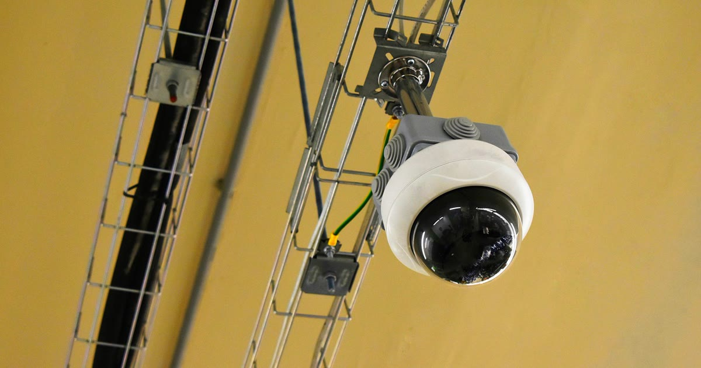

Não existe uma única "melhor câmera para pet" — existe o modelo certo para o que você mais precisa: custo-benefício básico, recursos interativos completos, ou imagem noturna superior. Reunimos os modelos mais citados em comparativos de mercado no Brasil.
É frequentemente apontada como a escolha mais popular para monitoramento de pets, equilibrando preço, recursos e confiabilidade: rotação horizontal de 360° e vertical de 114° pelo app, resolução Full HD 1080p, visão noturna de até 9 metros e áudio bidirecional (mybest, retrieved 2026-08-22).
Descrita como a câmera pet mais completa disponível no Brasil em 2026, soma dispensador de petiscos e laser interativo controlados pelo app às funções básicas de monitoramento (mesma fonte mybest citada acima, retrieved 2026-08-22).
veja como avaliar o recurso de dispensador de petisco antes de comprar
O Intelbras iM3 C é elogiado pela imagem nítida e pela eficiência da visão noturna, enquanto a Haiz Mini Botz se destaca pela combinação de preço, recursos e avaliação dos usuários (mybest, retrieved 2026-08-22).
| Modelo | Destaque | Recurso extra |
|---|---|---|
| TP-Link Tapo C200 | Custo-benefício | Rotação 360°/114° |
| Newpet Câmera Pet 2K | Mais completa | Dispensador de petisco + laser |
| Intelbras iM3 C | Imagem noturna | Visão noturna eficiente |
| Haiz Mini Botz | Preço x avaliação | Bom custo-benefício geral |
Para monitoramento básico e confiável, a Tapo C200 é o ponto de partida mais citado. Se você quer interagir ativamente com o pet (petisco, laser), vale considerar um modelo como a Newpet 2K, com o custo adicional que isso implica.
volte ao guia completo de câmera para monitorar pet
Escrito pela Equipe Smart Pet Gadgets, redação especializada em comparativos de produtos pet no mercado brasileiro. Veja nossa política editorial e como verificamos as fontes citadas neste artigo.
🐾 Confira o preço e a disponibilidade atual no Mercado Livre.
Ver no Mercado Livre →Link de afiliado: podemos receber uma comissão por compras feitas através deste link, sem custo adicional para você.
Nildo Alves — curadoria de produtos pet no Smart Pet Gadgets. Testa e pesquisa produtos para cães e gatos, cruzando especificações de fabricante com boas práticas veterinárias e dados de mercado.
Sobre o Smart Pet Gadgets · Contato · Política editorial e de afiliados